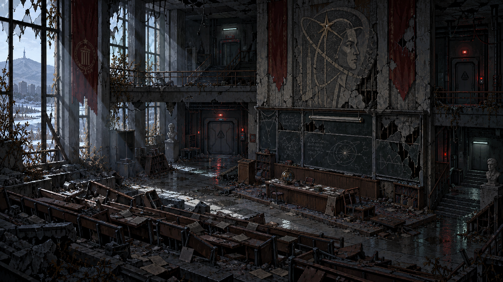
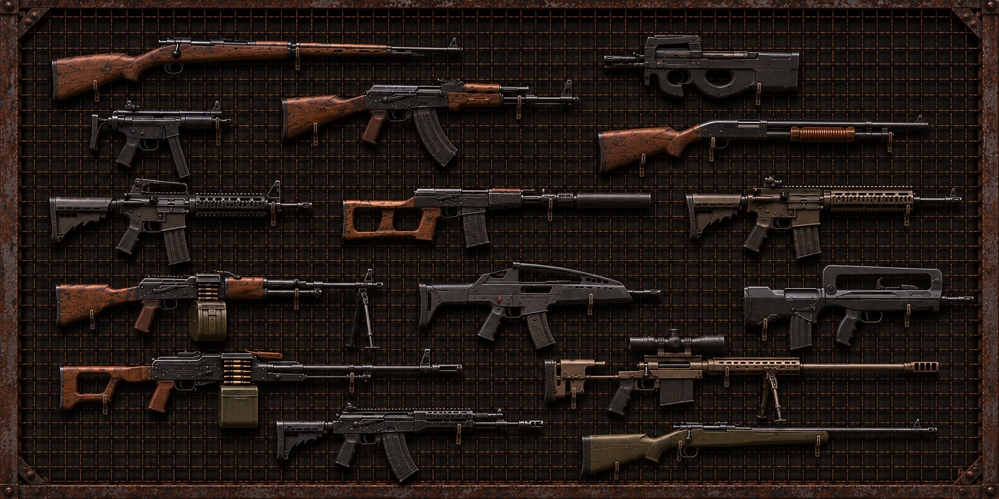
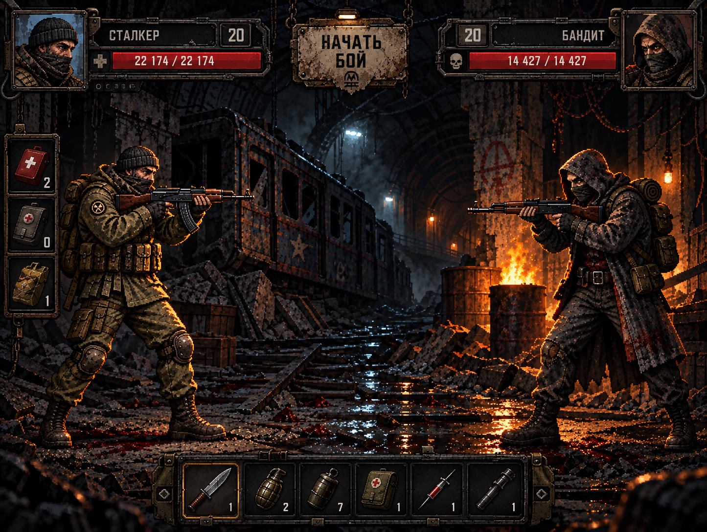
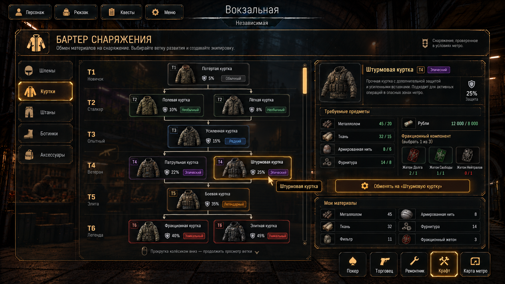
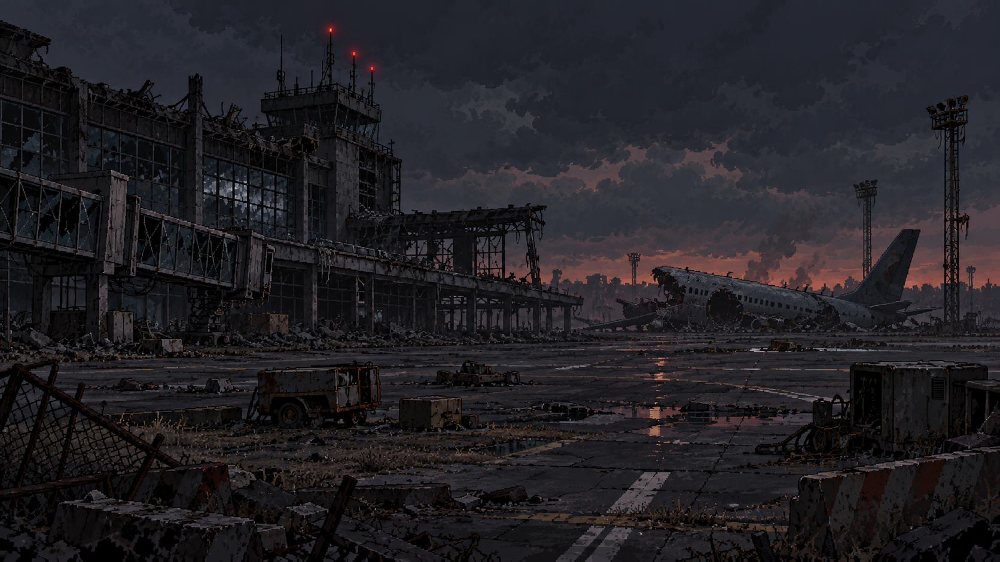
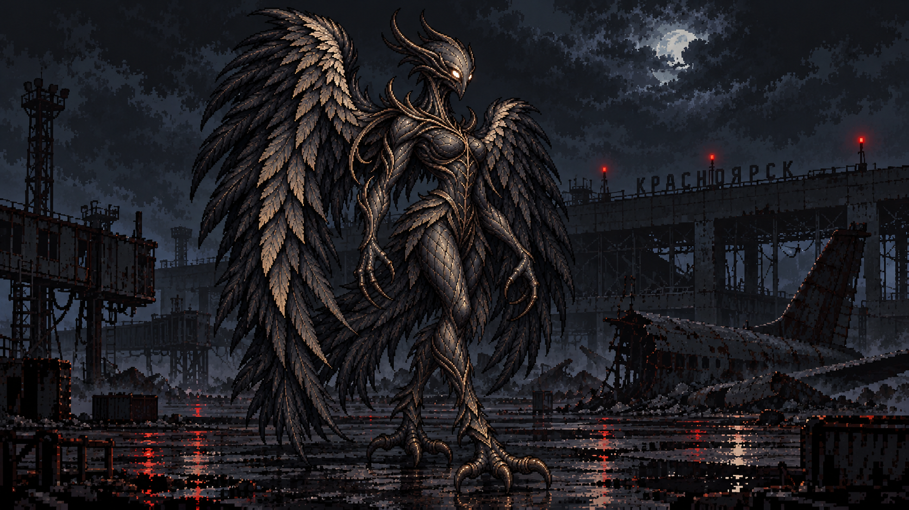

Обновление: станции и снаряжение
Прочность оружия переведена на шкалу 200, редкости тиров T1–T6, единый экран станций и полтора десятка проверок бартера, поручений и боевой системы. Сборка v13 уже доступна.
Патч-ноут →Постапокалиптическая RPG · Красноярск · Метро
Катаклизм стёр Красноярск с земли. Выжившие ушли под землю — на станции метро, где правят фракции, а сверху ждёт поверхность. Стань сталкером Lumma: торгуй, сражайся, снаряжайся на стенде — и выберись наверх.
◆ ◆ ◆
LUMMA — пиксельная RPG о жизни в мёртвом городе. После катаклизма последний Красноярск живёт в тоннелях метро: каждая станция превратилась в маленькое государство со своей властью, рынком и законом.
Ты — вольный сталкер станции Вокзальная. Берёшь поручения у NPC, меняешь материалы на снаряжение в бартере, растёшь в рангах — и рано или поздно снаряжаешь вылазку наверх, к институту СФУ, агрокомплексу и аэропорту, где ждут твари катаклизма.
«Над землёй не осталось ничего, кроме пыли и ветра. Кем ты станешь в тоннелях?»

◆ ◆ ◆
Прочность оружия переведена на шкалу 200, редкости тиров T1–T6, единый экран станций и полтора десятка проверок бартера, поручений и боевой системы. Сборка v13 уже доступна.
Патч-ноут →Тоннели и поверхность разведены по механикам: в тоннелях не тратится фильтр, а на поверхности открыты пять данжей с боссами и наградами. Пороги входа — от ранга 20.
Патч-ноут →Шесть открытых станций получили лица: Семён Часовщик, Ника Связь, Вера Громова, Марк Рубеж и другие. Поручения NPC первой рабочей версии уже в игре.
Читать →◆ ◆ ◆
Половина игры — это экипировка.
И тебе выбирать, с чем ты будешь прокладывать путь по тоннелям Красноярского метро.

◆ ◆ ◆

Тоннельные стычки разыгрываются в полноценном бою: атаки и перезарядка автоматические, а аптечка или граната заменяют удар текущего хода. Решение важнее рефлексов.

Экипировка не покупается за деньги — она выменивается на материалы. Шесть тиров, ветки развития и фракции: одна и та же куртка служит по-разному у Хетонов Долга и Хетонов Свободы.

Противогаз на лицо, фильтр в рюкзак — и наверх. Институт СФУ, агрокомплекс, виварий, медблок и аэропорт: пять данжей, боссы и награда за каждое событие.

Поверхность перестала принадлежать людям. Крылатый демон над руинами аэропорта — лишь одна из тварей, которых придётся обойти, пробиться мимо или переубедить свинцом.
◆ ◆ ◆
* Требования ориентировочные — уточняются перед релизом.
Установщик LUMMA · Windows 10/11 · около 95 МБ; игру лаунчер загрузит отдельно
Запусти — лаунчер сам установится и появится ярлык на рабочем столе